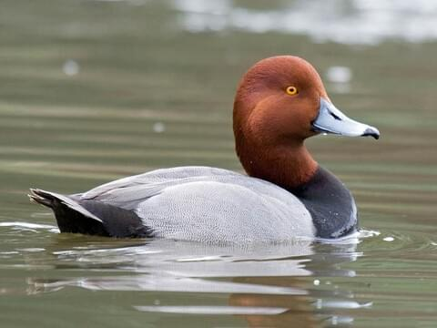
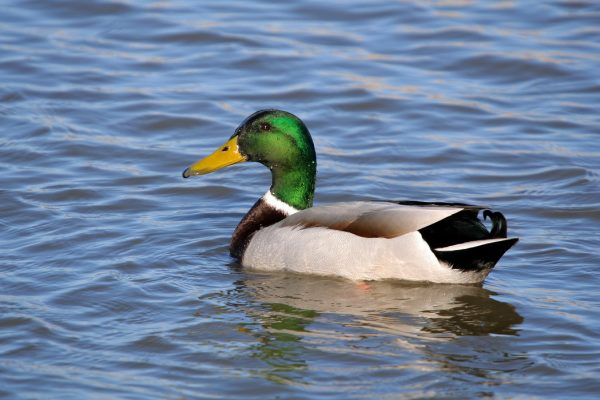

duck species

Species 1
canavss

Species 2
Mallard

ဘဲမွေးမြူရေးသမား များအတွက် ဘဲခြံတည်ဆောက်နည်း၊မွေးမြူနည်းနှင့် ရောဂါများကုသနည်းများကိုလေ့လာနိုင်ပါသည်။
Get Start

သဲဆန်သောမြေမှာ ဘဲမွေးမြူရေးအတွက် သင့်တော်ပြီး ဆင်ခြေလျှောကုန်းမြင့်နှင့် ရေစီးနေသော ရေကန်၊ ချောင်းနှင့် လွှတ်ကျောင်းနိုင်သော မြက်ခင်းများရှိလျှင် ပို၍သင့်တော်သည်။ရေကန်ရွေးချယ်ရာတွင် အဆက်မပြတ်စီးနေသော ရေရှင် နေရာမျိုးဖြစ်ရန်လိုအပ်သည်။မြစ်ချောင်းနံဘေးတွင် မွေးမြူမည်ဆိုပါက ချောင်းသည်အနံ ၉ပေ၊ ရေအနက် ၂ပေခန့်ရှိလျှင် လုံလောက်၍ ရေစီးနှုန်းအသင့်အတင့်ဖြစ်လျှင် သင့်တော်သည်။ရေကန်တူး၍ မွေးမြူလျှင် အကျယ် ၅ပေ ပတ်လည်နှင့် အနက်၁နှစ်ပိုင်းတစ်ပိုင်းပေရှိလျှင် ဘဲ(၁၀၀)ကောင် မွေးမြူနိုင်သည်။ရေကန်အား ၂ပတ်တစ်ကြိမ် ရေလဲလှယ်ပေးရန် လိုအပ်ပြီး ရေကန်ပတ်လည်တွင် သစ်ပင်ရိပ်များရှိရန် လိုအပ်သည်။ သစ်ပင်ရိပ်မရှိလျှင် ယာယီအရိပ်တဲဆောက်ပေးရန် လိုအပ်သည်။ ဘဲအတက်အဆင်း လွယ်ကူရန် ရေကန်နှုတ်ခမ်းကို ဆင်ခြေလျှော လုပ်ထားရမည်။
ဒေသထွက် သစ်၊ ဝါးများဖြင့် ဆောက်လုပ်နိုင်ပြီး ဘဲခြံများ အလင်းရောင်ကောင်းစွာရပြီး လေဝင်လေထွက်ကောင်းရန် လိုအပ်သည်။ -အခင်းမှာ သဲခင်းပေးလျှင် ပို၍ကောင်းမွန်သည်။ (ကောက်ရိုး၊ စပါးခွံများကိုလည်းအသုံးပြုနိုင်) -အခင်းများညစ်ပေလျှင် မကြာခဏ လဲလှယ်ပေးရမည်။ အဆောက်အဦ အကျယ်အဝန်းလိုအပ်ချက် ဘဲငယ်တစ်ကောင်=၁/၂ - ၁ စတုရန်းပေ ဘဲလတ်=၂ - ၂ ၁/၂ စတုရန်းပေ၊ဘဲကြီး=၃ - ၄ စတုရန်းေပအဆောက်အဦးပုံစံ အဆောက်အဦအလျား၁၂ပေ၊အဆောက်အဦအနံ၈ပေ၊ဒေါက်တိုင်အမြင့်၁၄ပေ၊လက်ခံတိုင်အမြင့်၆ေပ၊ဒူးပိတ် - ဝါးထရံ၁ပေအမြင့်အကာ - ဝါးခြမ်း။
အစာခွက် ရေခွက် လိုအပ်ချက်
ဥဘဲမ(၃၀)ကောင်အတွက် ၁နှစ်ပိုင်းတစ်ပိုင်းပေ × ၂နှစ်ပိုင်းတစ်ပိုင်းပေ
အစာခွက် (၂)ခု၊ရေခွက် - အချင်း ၁နှစ်ပိုင်းတစ်ပိုင်း ပေ
ဇလုံ(၁)လုံး။မှတ်ချက်။အစာခွက်နှင့် ရေခွက်ကို
နီးကပ်စွာထားပြီးရေခွက်ကို မကြာခဏ လဲလှယ်ပေးရန် လိုအပ်သည်။ ဘဲဥကျင်း
ဥဘဲမကြီး(၈)ကောင် - ဥကျင်းတစ်ကျင်းနှုန်းထားရန်၊ဥကျင်းကို စပါးခွံ၊
ကောက်ရိုးခင်းထားရန် လိုအပ်သည်။
ဝမ်းကျရောဂါဖြစ်ပွားပါက အသားများအလွန်ပူခြင်း၊ ဒူးဆစ်ရိုးရောင်ခြင်း၊
အသေမြန်ခြင်း စသည့် လက္ခဏာများ တွေ့ရတတ်သည်။
ကြိုတင်ကာကွယ်ရန်မှာမူ -
ဘဲများအတွက် ဝမ်းရောဂါကာကွယ်ဆေးထိုး၍ ကာကွယ်နိုင်သည်။
ရောဂါဖြစ်ပွားနေပါက – ဆာလ်ဖိုနဖိုက်ဆေးများ တိုက်ကျွေးရပါမည်။
ရောဂါဖြစ်ပွားပါက -
(နိုက်ထရိုဖျူရာဇုန်း)ဆေး တိုက်ကျွေးသင့်သည်။
ဆဲလ်မိုနီးလားရောဂါပိုး တစ်မျိုးကြောင့် ဖြစ်ပွားရခြင်းဖြစ်သည်။
အထူးသဖြင့် ဘဲငယ်များတွင် ဖြစ်ပွားတတ်သည်။ ရောဂါဖြစ်ပွားပါက
အအေးမိသကဲ့သို့ အသက်ရှူကျပ်ခြင်း၊ တဖြည်းဖြည်းပိန်လာပြီး သေဆုံးခြင်း၊
မှောက်၍ သေးဆုံးနေခြင်း စသည့် လက္ခဏာများ တွေ့ရသည်။
ကြိုတင်ကာကွယ်ရန်မှာ - မွေးမြူရာတွင် ပတ်ဝန်းကျင်သန့်ရှင်းရေး ဂရုစိုက်ရမည်။
ရောဂါဖြစ်ပွားပါက -
(နိုက်ထရိုဖျူရာဇုန်း)ဆေး တိုက်ကျွေးသင့်သည်။

ဘက်တီးရီးယားရောဂါပိုးကြောင့် ဖြစ်ပွားရခြင်းဖြစ်သည်။ ရောဂါဖြစ်ပွားပါက
ခြေထောက်များဆွဲနေပြီး ကိုယ်ခန္ဓာမဟန်နိုင်ခြင်း၊ ခြေထောက်များ
ယက်ကန်ယက်ကန်ဖြစ်နေခြင်း၊ မစင်စွန့်ရာတွင် အစိမ်းရောင်၊
အဖြူရောင်များတွေ့ရခြင်း စသည့် လက္ခဏာများ တွေ့ရသည်။
ကာကွယ်ရန်မှာ -
အာဟာရဓါတ်ပြည့်ဝသော အစာများကျွေးခြင်း၊ ပတ်ဝန်းကျင်သန့်ရှင်းပြီး
လေကောင်းလေသန့်အမြဲရရှိစေရန် ဆောင်ရွက်ထားသင့်သည်။
ရောဂါဖြစ်ပွားပါက –
ဘဲများကို (၆)နာရီခန့် အစာမကျွေးဘဲထားပြီး ဆာလ်ဖိုနဖိုက်ဆေး
တိုက်ကျွေးရပါမည်။
(က) အအေးမိရောဂါ - ရေမှော်ပင်အား အစာတွင် ထည့်ကျွေးပါ။
(ခ) ချောင်းဆိးရောဂါ - ကညွတ်ပင်အားထောင်း၍ အရည်အနည်းငယ် တိုက်ပေးပါ။
(ဂ) သွေးဝမ်းရောဂါ - ဗေဒါပင်စင်း၍ ကျွေးပါ။

(ဃ) အပူနာရောဂါ - ဘဲကိုရေချခြင်း၊ ရေပက်ခြင်းပြုလုပ်ပါ။
(င) ဝမ်းချုပ်ရောဂါ - ဆားခါးကို ရေဖြင့် ဖျော်တိုက်ပါ။
ရောဂါကူးစက်ပြန့်ပွားမှုမရှိစေရန် ရောဂါဖြစ်ပွားနေသော ဘဲများကို အခြားဘဲများနှင့် ရောမထားဘဲ ချက်ချင်းခွဲထုတ်၍ သီးခြားထားရပါမည်။ ဤသို့ မပြုလုပ်ပါက ရောဂါများကူးစက်ပြန့်ပွားပြီး ဆုံးရှုံးမှုများကို ဖြစ်စေနိုင်သည်။ ရောဂါဖြစ်ပွားသည့် ဘဲ သေဆုံးသွားခြင်း(သို့) ကုသ၍ မရတေ့ာလောက်အောင် ရောဂါဆိုးရွာလာလျှင် တွင်းနက်နက်တူးပြီး မြေမြုပ်သင့်ပါသည်။
ကျန်းမာသန်စွမ်းမှုမရှိဘဲ ချည့်နဲ့နေသော ဘဲများကိုလည်း အခြားဘဲများနှင့်အတူ ရောနှော၍ မထားသင့်ဘဲ စောစီးစွာ ဖယ်ထုတ်သင့်ပါသည်။
ဘဲများမှာ အစာရှာစားရင်း သံတိုသံစ ကဲ့သို့သော တွေ့ရာပစ္စည်းကိုလည်း မျိုချလေ့ရှိကြသည်။ ထို့ကြောင့် မွေးမြူရေးခြံအနီး ပတ်ဝန်းကျင်တွင် သံတိုသံစကဲ့သို့သော ပစ္စည်းများကို ရံဖန်ရံခါ ဖယ်ရှားသင့်သည်။
ဘဲထီးအင်္ဂါသည် သွက်ချာပါဒဖြစ်ခြင်း၊ ဘဲမများတွင် ဥအိမ်အဝထွက်လာခြင်းတို့သည် မကြာခဏတွေ့ရတတ်သည့် ရောဂါများဖြစ်သည်။ ထို့ပြင် ဝမ်းဗိုက်ထဲတွင် ရေများစု၍ တွဲကျနေသည့်ရောဂါများလည်း ကြုံတွေ့ရတတ်သည်။ ဤရောဂါမျိုးမှာ မျိုးရိုးမှတဆင့် ကူးစက်တတ်သောကြောင့် အထူးဂရုစိုက်သင့်ပါသည်။